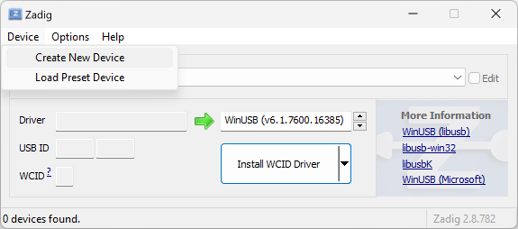
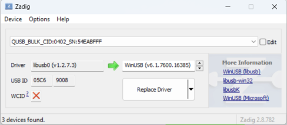

flash.comma.ai
This tool allows you to flash AGNOS onto your comma device. AGNOS is the Ubuntu-based operating system for your comma 3/3X.
Requirements
- A web browser which supports WebUSB (such as Google Chrome, Microsoft Edge, Opera), running on Windows, macOS, Linux, or Android.
- A good quality USB-C cable to connect the device to your computer. USB 3 is recommended for faster flashing speed.
- Another USB-C cable and a charger, to power the device outside your car.
USB Driver
You need additional driver software for Windows before you connect your device.
- Download and run Zadig.
-
Under
Devicein the menu bar, selectCreate New Device.  -
Fill in three fields. The first field is just a description and you can fill in anything. The next two
fields are very important. Fill them in with
andrespectively. Press "Install Driver" and give it a few minutes to install. 
No additional software is required for macOS, Linux or Android.
Flashing
Follow these steps to put your device into QDL mode:
- Unplug the device and wait for the LED to switch off.
- First, connect the device to your computer using the lower USB-C port (port 1).
- Second, connect power to the upper OBD-C port (port 2).
Your device's screen will remain blank for the entire flashing process. This is normal.
On Linux systems, devices in QDL mode are automatically bound to the kernel's qcserial driver, and need to be unbound before we can access the device. Copy the script below into your terminal and run it after plugging in your device.
Next, click the button to start flashing. From the prompt select the device which starts with "QUSB_BULK".
The process can take 30+ minutes depending on your internet connection and system performance. Do not unplug the device until all steps are complete.
Troubleshooting
Lost connection
Try using high quality USB 3 cables. You should also try different USB ports on the front or back of your computer. If you're using a USB hub, try connecting directly to your computer instead.
My device's screen is blank
This is normal in QDL mode. You can verify that the "QUSB_BULK" device shows up when you press the Flash button to know that it is working correctly.
My device says "fastboot mode"
You may have followed outdated instructions for flashing. Please read the instructions above for putting your device into QDL mode.
General Tips
- Try another computer or OS
- Try different USB ports on your computer
- Try different USB-C cables; low quality cables are often the source of problems. Note that the included OBD-C cable will not work.
Other questions
If you need help, join our Discord server and go to the #hw-three-3x channel.